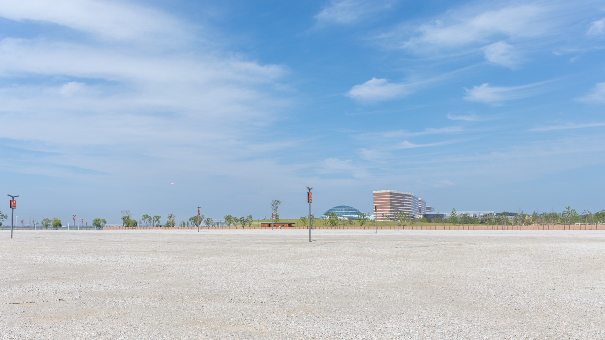
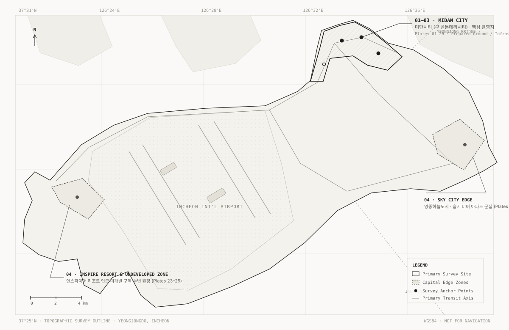

MONEY ISLAND
21세기 골드러쉬의 지형학 — Topography of a 21st-Century Gold Rush
작업 노트
차승현 (Seunghyun Cha)
Incheon Yeongjongdo · Midan City
지형 아카이브
이폭 대조 (Diptychs)
방치된 지표면·골조와 완벽히 유지되는 유휴 인프라를 나란히 배치해 21세기 골드러쉬의 구조적 모순을 드러냅니다.
촬영 구역 인덱스 맵

LOCATION
인천광역시 중구 운북동 일대 (구 미단시티 / 현 골든테라시티)
UPCOMING SURVEY SLOTS
- Slot A — 중단 리조트 골조 정면 원경·중경 (흐린 날 확산광)
- Slot B — 베허 부부식 3×3 유형학 그리드 (빈 버스정류장 / 매각 현수막)
- Slot C — 고지대 부감 및 기성 어촌(예단포)·송전탑 경계면
THEORETICAL REFERENCES
William Jenkins (New Topographics, 1975) · Charlotte Cotton (Deadpan) · Robert Adams · Lewis Baltz · Bernd & Hilla Becher · Stephen Shore · Joe Deal